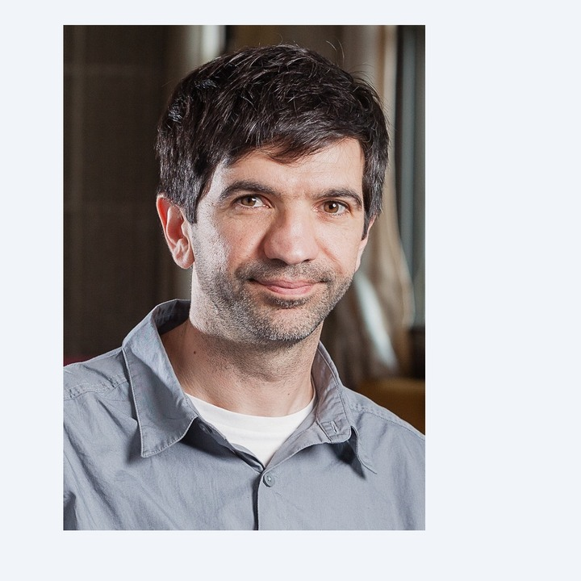

Serdar Yüksel
Queen's University, Canada
Talk information
Reinforcement Learning for Complex (non-Markovian) Systems and Agentic Subjective Equilibria
Abstract
In many applications, agents take part in systems with very complex dynamics and they respond by inevitably making incorrect modeling assumptions. Consider an agent who simultaneously learns a system and applies a decision/control policy corresponding to the learned system, where the agent views the complex (non-Markovian) system to be Markovian with perceived state variables. We present a general convergence theorem involving Q-learning with such non-Markovian dynamics under mild ergodicity conditions, and show that the limit corresponds to the fixed point of an approximate model induced by the exploration policy used during learning. When the approximation, via a quantization of a hidden complex state with a general Borel space, is sufficiently fine, under weak continuity of kernels the resulting policy is near optimal for the original system. Equivalently, this implies near optimality of empirical model learning where one fits data into a finite Markovian model under weak continuity conditions.
However, when the approximate state space is insufficiently coarse, the effect of the exploration policy becomes critical: the policy used to generate the sample paths induces a model, and then the model is used to obtain an optimal policy. This leads to the question on the existence of a fixed point equation involving learning and optimality. Beyond the single agent setting, such a setup arises when multiple decision makers are present with incomplete and different models. We define “agentic subjective equilibrium” policies as those which are self-confirming: the models induced by policies have the policies as their near optimal solutions. We establish an existence result on equilibria, and an associated convergence theorem to such ε-equilibria via policy revision dynamics. We present implications on multi-agent learning with only local/decentralized information involving symmetric dynamic games (including mean field games), generalized weakly acyclic games (including potential games), and stochastic teams.
Joint work with Gurdal Arslan, Ali Kara, and Bora Yongacoglu.